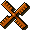

|
|
Description |
Knights and Merchants Remake Demo
Brought to you by Krom and Lewin
Contents:
Description � System requirements � Installing
� Gameplay � F.A.Q. �
Known bugs � Feedback �
Credits �
Legal notice
Description
KaM Remake (we don't have a fancy title yet) is an attempt to reinvent original "Knights and Merchants: The Shattered Kingdom" strategy game.
This is the first public limited technology preview (demo) featuring the economy part of the game
(referred as "mod" or "Remake" further on). Our aim is to demonstrate the
potential and get feedback on functionality. All included "assets" borrowed from
KaM are there for testing purposes only. Final release will not include any of
copyrighted "assets".
We assume that you own the original KaM game, in other case you should buy it -
it's available in number of online gaming stores.
KaM Remake executable (we own only exe
file, right?) is freeware and is
built by enthusiasts. Applications used: Delphi6, OpenGL, OpenAL, zLib.
I think we can put it as follows: KaM Remake is a mod (sic!) for original KaM TSK/TPR, some kind of alternative exe. This way we rely only on files owned by end user. And as your father noted - this demo is a "limited technology preview" only. Later on we could wrap this in a way that we upload only KaM_Remake.exe and a script to convert all files/paths to Remake format.
Show the text to your father once again plz. Least of all we need troubles with copyrights.. And I will ask a friend of mine for same matter meanwhile.
You wake up in a medieval age in a land ruled by a king. Your goal is to build your own kingdom. You don't have direct control for it's not a leaders job to sort out such small matters. You control really important things: economy, building and later on - army.
System Requirements
KaM Remake requires: Windows 98, XP or Vista, a 500MHz or faster processor, 256MB or more of RAM, a 3D graphics accelerator OpenGL 1.4 compliant, sound card.
Installing
Unpack all files contained in the package into new
folder on your PC.
Package includes OpenAL audio drivers (oalinst.exe).
You might need to install them to play the KaM Remake. Latest version can be
found on official OpenAl page:
http://connect.creativelabs.com/openal/default.aspx
KaM Remake uses OpenGL rendering engine, so you need to have OpenGL drivers
installed as well. Visit your graphics card manufacturer site to get the latest
drivers available.
Launch the mod - KaM_Remake.exe.
Gameplay
The following shortcuts are available in game:
F8 speeds up the game pace x10 times
F11 will show debugging panel and menu
Mouse wheel scrolling it will zoom in and out
← backspace will reset zoom back to default 100%
P pauses the game
←↑→↓ cursor keys will scroll the view in game
Middle mouse click will place a scout at the cursor to allow you to explore
the map
Installing addon maps:
1. Create a sub-folder in Maps folder of KaM Remake, name it i.e. "My New Map".
2. Put inside .dat and .map files of the map and name them accordingly "My New Map.dat" and "My New Map.map".
File names should match folder name exactly.
3. You can also make an
optional file called "My New Map.txt" which will contain the
mission description and some other information. Use the same format as in the missions provided
with Remake. No official format information will be released because this file will probably be changed later on.
F.A.Q.
Silent crashes:
KaM Remake silently crashes on loading or music track change if there are any
problems with Windows sound system. Remove "Music" folder from KaM Remake,
this should help.
Low framerate:
If you have ridiculously low framerate this could mean your OpenGL drivers are
out of date. See OpenGL version info in main menu top-left corner. It should be
at least 1.4.x. If it's any less you need to update your graphics card drivers
(check card manufacturers website for that matter).
Assertion failed errors:
Sometimes when something unexpectedly happen you will get a "Assertion failed"
message. In this case you should terminate KaM_Remake from Task Manager (press
Ctrl+Alt+Del, choose KaM Remake and press End Task button). Browse to KaM Remake
folder and find KaM.log file containing details of the crash. Please send this
file by email either to Krom (kromster80@gmail.com) or Lewin (lewinjh@gmail.com) along with details of what you did to make it crash and any other information that might be of use.
Known bugs and limitations
Main menu has fixed 1024x768 size irregardless of window
size or fullscreen mode.
Only single-player maps are supported (ones with !SET_HUMAN_PLAYER line).
Units will go through one another.
Fisherman won't go for fish.
Unit training in Barracks and Town Hall isn't functioning.
Citizens won't go to eat if they are standing off the road.
Please use the forum to give us feedback. Most of the bugs are probably known, but we would love your feedback, suggestions, complements, etc.
 Feedback
Lead programmer - Krom
Credits
Add new icon ^ here please! =)
Legal notice